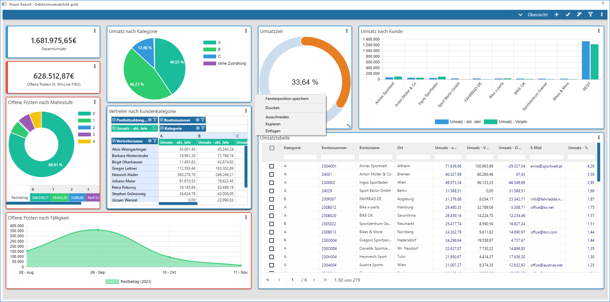

Im WinLine Cockpit und dem Power Report stehen, wenn es sich nicht um ein explizites Objekt (z.B. ein Personenkonto) handelt, die folgenden Funktionen zur Verfügung:

Ø Fensterposition speichern
Jedes Fenster kann an einen beliebigen Ort am Bildschirm verschoben werden, wodurch der Bildschirmaufbau individuell gestaltet werden kann. Durch Anwahl von "Fensterposition speichern" wird die Fensterposition des aktiven Fensters von der WinLine benutzerspezifisch gespeichert und beim nächsten Aufruf an der gespeicherten Stelle angezeigt.
Achtung
Es können nur solche Fenster gespeichert werden, die nicht in Vollbildmodus angezeigt werden.
Ø Drucken
Mit dieser Option kann das Cockpit bzw. der Power Report ausgedruckt werden. Es handelt sich hierbei um einen HTML-Ausdruck, d.h. das Druckergebnis hängt u.a. von der Positionierung der Elemente im Cockpit / Power Report ab.
Ø Ausschneiden
Damit wird der Inhalt eines Eingabefeldes gelöscht und in die Zwischenablage kopiert. Von dort aus kann es z.B. in ein anderes Eingabefeld eingefügt werden.
Ø Kopieren
Damit wird der Inhalt eines Eingabefeldes bzw. eines Widgets in die Zwischenablage kopiert, von wo es z.B. in ein anderes Eingabefeld kopiert werden kann. Der Inhalt des Eingabefeldes bzw. des Widgets wird nicht verändert.
Ø Einfügen
Damit wird der Inhalt der Zwischenablage in das aktuelle Eingabefeld kopiert.